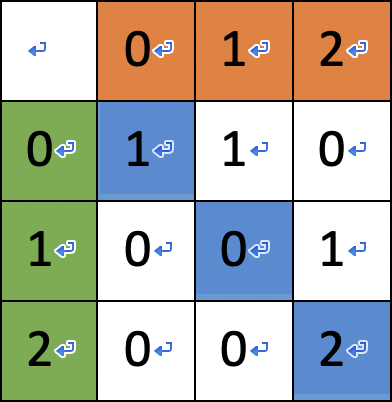
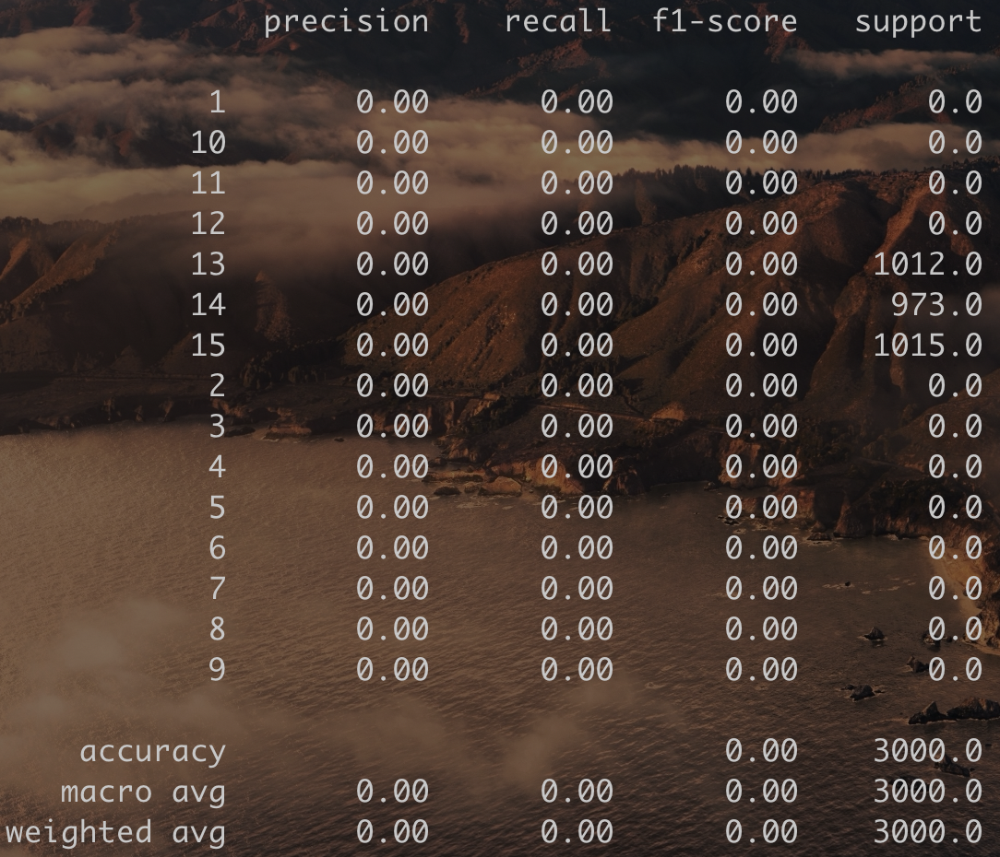

<!DOCTYPE html><html lang="zh-TW" data-theme="light"><head><meta charset="UTF-8"><meta http-equiv="X-UA-Compatible" content="IE=edge"><meta name="viewport" content="width=device-width,initial-scale=1"><title>Python x 機器學習 | Scar's Blog</title><meta name="author" content="Eric Hsieh"><meta name="copyright" content="Eric Hsieh"><meta name="format-detection" content="telephone=no"><meta name="theme-color" content="#ffffff"><meta name="description" content="經過前人的努力，現在已經有很多的機器學習的工具可以讓我們使用。 Scikit-LearnScikit-Learn是一套很常被使用的機器學習工具，若要在Python使用，其include函式庫的名稱為sklearn。 Classifier每個classifier都對應著一套機器學習的演算法，Scikit-Learn裡面有很多個classifier。若要使用某個classifier，則在使用前，我們需">
<meta property="og:type" content="article">
<meta property="og:title" content="Python x 機器學習">
<meta property="og:url" content="http://scar0615.github.io/2021/08/16/study/index.html">
<meta property="og:site_name" content="Scar&#39;s Blog">
<meta property="og:description" content="經過前人的努力，現在已經有很多的機器學習的工具可以讓我們使用。 Scikit-LearnScikit-Learn是一套很常被使用的機器學習工具，若要在Python使用，其include函式庫的名稱為sklearn。 Classifier每個classifier都對應著一套機器學習的演算法，Scikit-Learn裡面有很多個classifier。若要使用某個classifier，則在使用前，我們需">
<meta property="og:locale" content="zh_TW">
<meta property="og:image" content="http://scar0615.github.io/2021/08/16/study/22.jpg">
<meta property="article:published_time" content="2021-08-16T03:48:45.000Z">
<meta property="article:modified_time" content="2021-08-17T16:32:49.276Z">
<meta property="article:author" content="Eric Hsieh">
<meta name="twitter:card" content="summary">
<meta name="twitter:image" content="http://scar0615.github.io/2021/08/16/study/22.jpg"><link rel="shortcut icon" href="/img/favicon.png"><link rel="canonical" href="http://scar0615.github.io/2021/08/16/study/"><link rel="preconnect" href="//cdn.jsdelivr.net"/><link rel="preconnect" href="//busuanzi.ibruce.info"/><link rel="stylesheet" href="/css/index.css"><link rel="stylesheet" href="https://cdn.jsdelivr.net/npm/@fortawesome/fontawesome-free/css/all.min.css" media="print" onload="this.media='all'"><script>const GLOBAL_CONFIG = { 
  root: '/',
  algolia: undefined,
  localSearch: undefined,
  translate: undefined,
  noticeOutdate: undefined,
  highlight: {"plugin":"highlighjs","highlightCopy":true,"highlightLang":true,"highlightHeightLimit":false},
  copy: {
    success: '複製成功',
    error: '複製錯誤',
    noSupport: '瀏覽器不支援'
  },
  relativeDate: {
    homepage: false,
    post: false
  },
  runtime: '天',
  date_suffix: {
    just: '剛剛',
    min: '分鐘前',
    hour: '小時前',
    day: '天前',
    month: '個月前'
  },
  copyright: undefined,
  lightbox: 'fancybox',
  Snackbar: undefined,
  source: {
    jQuery: 'https://cdn.jsdelivr.net/npm/jquery@latest/dist/jquery.min.js',
    justifiedGallery: {
      js: 'https://cdn.jsdelivr.net/npm/justifiedGallery/dist/js/jquery.justifiedGallery.min.js',
      css: 'https://cdn.jsdelivr.net/npm/justifiedGallery/dist/css/justifiedGallery.min.css'
    },
    fancybox: {
      js: 'https://cdn.jsdelivr.net/npm/@fancyapps/fancybox@latest/dist/jquery.fancybox.min.js',
      css: 'https://cdn.jsdelivr.net/npm/@fancyapps/fancybox@latest/dist/jquery.fancybox.min.css'
    }
  },
  isPhotoFigcaption: false,
  islazyload: false,
  isanchor: false
}</script><script id="config-diff">var GLOBAL_CONFIG_SITE = {
  title: 'Python x 機器學習',
  isPost: true,
  isHome: false,
  isHighlightShrink: false,
  isToc: true,
  postUpdate: '2021-08-18 00:32:49'
}</script><noscript><style type="text/css">
  #nav {
    opacity: 1
  }
  .justified-gallery img {
    opacity: 1
  }

  #recent-posts time,
  #post-meta time {
    display: inline !important
  }
</style></noscript><script>(win=>{
    win.saveToLocal = {
      set: function setWithExpiry(key, value, ttl) {
        if (ttl === 0) return
        const now = new Date()
        const expiryDay = ttl * 86400000
        const item = {
          value: value,
          expiry: now.getTime() + expiryDay,
        }
        localStorage.setItem(key, JSON.stringify(item))
      },

      get: function getWithExpiry(key) {
        const itemStr = localStorage.getItem(key)

        if (!itemStr) {
          return undefined
        }
        const item = JSON.parse(itemStr)
        const now = new Date()

        if (now.getTime() > item.expiry) {
          localStorage.removeItem(key)
          return undefined
        }
        return item.value
      }
    }
  
    win.getScript = url => new Promise((resolve, reject) => {
      const script = document.createElement('script')
      script.src = url
      script.async = true
      script.onerror = reject
      script.onload = script.onreadystatechange = function() {
        const loadState = this.readyState
        if (loadState && loadState !== 'loaded' && loadState !== 'complete') return
        script.onload = script.onreadystatechange = null
        resolve()
      }
      document.head.appendChild(script)
    })
  
      win.activateDarkMode = function () {
        document.documentElement.setAttribute('data-theme', 'dark')
        if (document.querySelector('meta[name="theme-color"]') !== null) {
          document.querySelector('meta[name="theme-color"]').setAttribute('content', '#0d0d0d')
        }
      }
      win.activateLightMode = function () {
        document.documentElement.setAttribute('data-theme', 'light')
        if (document.querySelector('meta[name="theme-color"]') !== null) {
          document.querySelector('meta[name="theme-color"]').setAttribute('content', '#ffffff')
        }
      }
      const t = saveToLocal.get('theme')
    
          if (t === 'dark') activateDarkMode()
          else if (t === 'light') activateLightMode()
        
      const asideStatus = saveToLocal.get('aside-status')
      if (asideStatus !== undefined) {
        if (asideStatus === 'hide') {
          document.documentElement.classList.add('hide-aside')
        } else {
          document.documentElement.classList.remove('hide-aside')
        }
      }
    
    const fontSizeVal = saveToLocal.get('global-font-size')
    if (fontSizeVal !== undefined) {
      document.documentElement.style.setProperty('--global-font-size', fontSizeVal + 'px')
    }
    })(window)</script><meta name="generator" content="Hexo 5.4.0"></head><body><div id="loading-box"><div class="loading-left-bg"></div><div class="loading-right-bg"></div><div class="spinner-box"><div class="configure-border-1"><div class="configure-core"></div></div><div class="configure-border-2"><div class="configure-core"></div></div><div class="loading-word">載入中...</div></div></div><div id="web_bg"></div><div id="sidebar"><div id="menu-mask"></div><div id="sidebar-menus"><div class="author-avatar"></div><div class="site-data"><div class="data-item is-center"><div class="data-item-link"><a href="/archives/"><div class="headline">文章</div><div class="length-num">19</div></a></div></div><div class="data-item is-center"><div class="data-item-link"><a href="/tags/"><div class="headline">標籤</div><div class="length-num">1</div></a></div></div><div class="data-item is-center"><div class="data-item-link"><a href="/categories/"><div class="headline">分類</div><div class="length-num">4</div></a></div></div></div><hr/><div class="menus_items"><div class="menus_item"><a class="site-page" href="/"><i class="fa-fw fas fa-home"></i><span> 主頁</span></a></div><div class="menus_item"><a class="site-page" href="/archives/"><i class="fa-fw fas fa-archive"></i><span> 時間軸</span></a></div><div class="menus_item"><a class="site-page" href="/tags/"><i class="fa-fw fas fa-tags"></i><span> 標籤</span></a></div><div class="menus_item"><a class="site-page" href="/categories/"><i class="fa-fw fas fa-folder-open"></i><span> 分類</span></a></div><div class="menus_item"><a class="site-page" href="javascript:void(0);"><i class="fa-fw fas fa-list"></i><span> 列表</span><i class="fas fa-chevron-down expand"></i></a><ul class="menus_item_child"><li><a class="site-page child" href="/music/"><i class="fa-fw fas fa-music"></i><span> 音樂</span></a></li><li><a class="site-page child" href="/movies/"><i class="fa-fw fas fa-video"></i><span> 電影</span></a></li></ul></div><div class="menus_item"><a class="site-page" href="/link/"><i class="fa-fw fas fa-link"></i><span> 連結</span></a></div><div class="menus_item"><a class="site-page" href="/about/"><i class="fa-fw fas fa-heart"></i><span> 關於</span></a></div></div></div></div><div class="post" id="body-wrap"><header class="post-bg" id="page-header" style="background-image: url('/2021/08/16/study/22.jpg')"><nav id="nav"><span id="blog_name"><a id="site-name" href="/">Scar's Blog</a></span><div id="menus"><div class="menus_items"><div class="menus_item"><a class="site-page" href="/"><i class="fa-fw fas fa-home"></i><span> 主頁</span></a></div><div class="menus_item"><a class="site-page" href="/archives/"><i class="fa-fw fas fa-archive"></i><span> 時間軸</span></a></div><div class="menus_item"><a class="site-page" href="/tags/"><i class="fa-fw fas fa-tags"></i><span> 標籤</span></a></div><div class="menus_item"><a class="site-page" href="/categories/"><i class="fa-fw fas fa-folder-open"></i><span> 分類</span></a></div><div class="menus_item"><a class="site-page" href="javascript:void(0);"><i class="fa-fw fas fa-list"></i><span> 列表</span><i class="fas fa-chevron-down expand"></i></a><ul class="menus_item_child"><li><a class="site-page child" href="/music/"><i class="fa-fw fas fa-music"></i><span> 音樂</span></a></li><li><a class="site-page child" href="/movies/"><i class="fa-fw fas fa-video"></i><span> 電影</span></a></li></ul></div><div class="menus_item"><a class="site-page" href="/link/"><i class="fa-fw fas fa-link"></i><span> 連結</span></a></div><div class="menus_item"><a class="site-page" href="/about/"><i class="fa-fw fas fa-heart"></i><span> 關於</span></a></div></div><div id="toggle-menu"><a class="site-page"><i class="fas fa-bars fa-fw"></i></a></div></div></nav><div id="post-info"><h1 class="post-title">Python x 機器學習</h1><div id="post-meta"><div class="meta-firstline"><span class="post-meta-date"><i class="far fa-calendar-alt fa-fw post-meta-icon"></i><span class="post-meta-label">發表於</span><time class="post-meta-date-created" datetime="2021-08-16T03:48:45.000Z" title="發表於 2021-08-16 11:48:45">2021-08-16</time><span class="post-meta-separator">|</span><i class="fas fa-history fa-fw post-meta-icon"></i><span class="post-meta-label">更新於</span><time class="post-meta-date-updated" datetime="2021-08-17T16:32:49.276Z" title="更新於 2021-08-18 00:32:49">2021-08-18</time></span><span class="post-meta-categories"><span class="post-meta-separator">|</span><i class="fas fa-inbox fa-fw post-meta-icon"></i><a class="post-meta-categories" href="/categories/%E7%AD%86%E8%A8%98/">筆記</a></span></div><div class="meta-secondline"><span class="post-meta-separator">|</span><span class="post-meta-wordcount"><i class="far fa-file-word fa-fw post-meta-icon"></i><span class="post-meta-label">字數總計:</span><span class="word-count">1.2k</span><span class="post-meta-separator">|</span><i class="far fa-clock fa-fw post-meta-icon"></i><span class="post-meta-label">閱讀時長:</span><span>4分鐘</span></span><span class="post-meta-separator">|</span><span class="post-meta-pv-cv" id="" data-flag-title="Python x 機器學習"><i class="far fa-eye fa-fw post-meta-icon"></i><span class="post-meta-label">閱讀量:</span><span id="busuanzi_value_page_pv"></span></span></div></div></div></header><main class="layout" id="content-inner"><div id="post"><article class="post-content" id="article-container"><p>經過前人的努力，現在已經有很多的機器學習的工具可以讓我們使用。</p>
<h1 id="Scikit-Learn"><a href="#Scikit-Learn" class="headerlink" title="Scikit-Learn"></a>Scikit-Learn</h1><p>Scikit-Learn是一套很常被使用的機器學習工具，若要在Python使用，其include函式庫的名稱為sklearn。</p>
<h2 id="Classifier"><a href="#Classifier" class="headerlink" title="Classifier"></a>Classifier</h2><p>每個classifier都對應著一套機器學習的演算法，Scikit-Learn裡面有很多個classifier。若要使用某個classifier，則在使用前，我們需要先從sklearn的ensemble裡去引用該classifier，然後呼叫它，就可以使用fit()、predict()等函數，進行訓練以及測試，在機器學習世界的潛規則(?中，一堆資料裡，有<mark class="hl-label red">80%</mark> 會拿來訓練，剩下的<mark class="hl-label orange">20%</mark> 則用來測試。</p>
<p>至於要怎麼取得<font color=#00ff7f>訓練用的資料</font>和<font color=#00ff7f>測試用的資料</font>，這裡提供兩種方式：<br>1.使用Scikit-Learn裡提供的train_test_split函式來分類<br>用法如下：</p>
<ul>
<li>先放入data,target</li>
<li>設定test_size或是train_size(只要其中一個就好)<ul>
<li>如果值為小數，代表比例。</li>
<li>如果值為整數，代表數量。</li>
</ul>
</li>
<li>random_state就是該組隨機數的編號，如果填一個<mark class="hl-label default">非零的整數</mark> ，則在需要重複試驗的時候，保證得到一組一樣的隨機數。但填0或不填，每次呼叫產生出來的結果都會不一樣。</li>
</ul>
<figure class="highlight python"><table><tr><td class="gutter"><pre><span class="line">1</span><br><span class="line">2</span><br><span class="line">3</span><br><span class="line">4</span><br><span class="line">5</span><br><span class="line">6</span><br><span class="line">7</span><br><span class="line">8</span><br><span class="line">9</span><br><span class="line">10</span><br><span class="line">11</span><br><span class="line">12</span><br></pre></td><td class="code"><pre><span class="line"><span class="keyword">from</span> sklearn.model_selection <span class="keyword">import</span> train_test_split</span><br><span class="line"><span class="keyword">from</span> sklearn.metrics <span class="keyword">import</span> accuracy_score</span><br><span class="line"></span><br><span class="line">x = data</span><br><span class="line">y = target</span><br><span class="line">x_train, x_test, y_train, y_test = train_test_split(x, y, test_size=<span class="number">0.2</span>, random_state=<span class="number">0</span>)</span><br><span class="line"></span><br><span class="line">cls = GradientBoostingClassifier()</span><br><span class="line">cls.fit(x_train, y_train)</span><br><span class="line"></span><br><span class="line">prediction = cls.predict(x_test)</span><br><span class="line"><span class="built_in">print</span>(accuracy_score(y_test, prediction)) </span><br></pre></td></tr></table></figure>

<p>2.運用list的概念，自己手動分。</p>
<figure class="highlight python"><table><tr><td class="gutter"><pre><span class="line">1</span><br><span class="line">2</span><br><span class="line">3</span><br><span class="line">4</span><br><span class="line">5</span><br><span class="line">6</span><br><span class="line">7</span><br><span class="line">8</span><br><span class="line">9</span><br></pre></td><td class="code"><pre><span class="line"><span class="keyword">from</span> sklearn.metrics <span class="keyword">import</span> accuracy_score</span><br><span class="line"></span><br><span class="line">leng = <span class="built_in">len</span>(data)</span><br><span class="line"></span><br><span class="line">cls = GradientBoostingClassifier()</span><br><span class="line">cls.fit(data[:<span class="built_in">int</span>(leng*<span class="number">0.8</span>)], target[:<span class="built_in">int</span>(leng*<span class="number">0.8</span>)])</span><br><span class="line"></span><br><span class="line">prediction = cls.predict(data[<span class="built_in">int</span>(leng*<span class="number">0.8</span>):])</span><br><span class="line"><span class="built_in">print</span>(accuracy_score(target[<span class="built_in">int</span>(leng*<span class="number">0.8</span>):], prediction))</span><br></pre></td></tr></table></figure>

<p>我個人是比較喜歡第一種方法，因為第一種比較直觀，還能隨機取樣，而第二種就是固定取list的前80%當作訓練資料，剩下的用來測試。</p>
<h3 id="Fit"><a href="#Fit" class="headerlink" title="Fit"></a>Fit</h3><p>這個函式會將要訓練的資料放進classifier並訓練。假設我們令一變數cls等於GradientBoostingClassifier，而且要投入訓練的資料集dataTrain和訓練的特徵集targetTrain讓機器學習辨識，則我們可以這樣寫。</p>
<figure class="highlight python"><table><tr><td class="gutter"><pre><span class="line">1</span><br><span class="line">2</span><br></pre></td><td class="code"><pre><span class="line">cls = GradientBoostingClassifier()</span><br><span class="line">cls.fit(x_train), y_train)</span><br></pre></td></tr></table></figure>

<h3 id="Predict"><a href="#Predict" class="headerlink" title="Predict"></a>Predict</h3><p>這個函式會將測試的資料集dataTest丟入來預測出targetTest，我們可以用targetTest和原本的target比對，來了解機器學習後的準確率。</p>
<figure class="highlight python"><table><tr><td class="gutter"><pre><span class="line">1</span><br></pre></td><td class="code"><pre><span class="line">y_test = cls.predict(x_test)</span><br></pre></td></tr></table></figure>

<h3 id="這裡有一些classifier可以使用"><a href="#這裡有一些classifier可以使用" class="headerlink" title="這裡有一些classifier可以使用"></a>這裡有一些classifier可以使用</h3><p>GradientBoostingClassifier()</p>
<figure class="highlight python"><table><tr><td class="gutter"><pre><span class="line">1</span><br></pre></td><td class="code"><pre><span class="line"><span class="keyword">from</span> sklearn.ensemble <span class="keyword">import</span> GradientBoostingClassifier</span><br></pre></td></tr></table></figure>

<p>RandomForestClassifier()<br>使用前，需要先引用sklearn的ensemble。</p>
<figure class="highlight python"><table><tr><td class="gutter"><pre><span class="line">1</span><br></pre></td><td class="code"><pre><span class="line"><span class="keyword">from</span> sklearn.ensemble <span class="keyword">import</span> RandomForestClassifier</span><br></pre></td></tr></table></figure>

<h2 id="Metrics"><a href="#Metrics" class="headerlink" title="Metrics"></a>Metrics</h2><p>metrics這個函式庫主要是用來評估<mark class="hl-label default">運算出來的資料</mark> 和<mark class="hl-label default">實際資料</mark> 的誤差，要使用的話需要先引用sklearn。</p>
<figure class="highlight python"><table><tr><td class="gutter"><pre><span class="line">1</span><br></pre></td><td class="code"><pre><span class="line"><span class="keyword">from</span> sklearn <span class="keyword">import</span> metrics</span><br></pre></td></tr></table></figure>

<h3 id="Accuracy-Score"><a href="#Accuracy-Score" class="headerlink" title="Accuracy Score"></a>Accuracy Score</h3><p>這個函式會比較預測結果和實際結果，來算出準確率。</p>
<ul>
<li>前兩項分別放實際結果、預測結果(順序也可調換)</li>
<li>第三項為normalize，可以決定要輸出準確率，還是預測正確的樣本數(預設為True)。<ul>
<li>True輸出準確率，False預測正確的樣本數。</li>
</ul>
</li>
</ul>
<p>如果要使用這個函式的話，需要先從sklearn的metrics引入。</p>
<figure class="highlight python"><table><tr><td class="gutter"><pre><span class="line">1</span><br><span class="line">2</span><br></pre></td><td class="code"><pre><span class="line"><span class="keyword">from</span> sklearn <span class="keyword">import</span> metrics</span><br><span class="line"><span class="built_in">print</span>(metrics.accuracy_score(y_test, prediction))</span><br></pre></td></tr></table></figure>
<p>或是</p>
<figure class="highlight python"><table><tr><td class="gutter"><pre><span class="line">1</span><br><span class="line">2</span><br></pre></td><td class="code"><pre><span class="line"><span class="keyword">from</span> sklearn.metrics <span class="keyword">import</span> accuracy_score</span><br><span class="line"><span class="built_in">print</span>(accuracy_score(y_test, prediction))</span><br></pre></td></tr></table></figure>

<h3 id="Confusion-Matrix"><a href="#Confusion-Matrix" class="headerlink" title="Confusion Matrix"></a>Confusion Matrix</h3><p>這邊舉一個例子，令y_true = [0, 1, 2, 2, 2]和y_pred = [0, 0, 2, 2, 1]。</p>
<ul>
<li>綠色豎行放的是預測的類別</li>
<li>橘色橫行放的是正確的類別</li>
<li>x座標對應到實際資料、y座標對應到預測資料</li>
</ul>
<p>根據上面的規則，繪製成如下圖：<br></p>
<h3 id="Classification-Report"><a href="#Classification-Report" class="headerlink" title="Classification Report"></a>Classification Report</h3><p><br>名詞解釋：<br>support：某個類別在測試資料中占了多少樣本<br>precision：某個類別的準確率<br>recall：某個類別的召回率<br>f1-score：某個類別的F-score，F-score的計算方式如下：</p>
<p>micro avg：比對所有類別的test和prediction來計算出準確率<br>macro avg：每個類別加總後平均<br>weighted avg：每個類別乘上加權(也就是上面提到的support)後平均</p>
<p>這邊以上面介紹Confusion Matrix所舉的例子加以延伸</p>
<figure class="highlight python"><table><tr><td class="gutter"><pre><span class="line">1</span><br><span class="line">2</span><br><span class="line">3</span><br><span class="line">4</span><br><span class="line">5</span><br><span class="line">6</span><br><span class="line">7</span><br><span class="line">8</span><br><span class="line">9</span><br><span class="line">10</span><br></pre></td><td class="code"><pre><span class="line"><span class="built_in">print</span>(classification_report(y_true, y_pred, target_names=target_names))</span><br><span class="line">              precision    recall  f1-score   support</span><br><span class="line"></span><br><span class="line">     <span class="class"><span class="keyword">class</span> 0       0.50      1.00      0.67         1</span></span><br><span class="line"><span class="class">     <span class="title">class</span> 1       0.00      0.00      0.00         1</span></span><br><span class="line"><span class="class">     <span class="title">class</span> 2       1.00      0.67      0.80         3</span></span><br><span class="line"><span class="class"></span></span><br><span class="line"><span class="class">   <span class="title">micro</span> <span class="title">avg</span>       0.60      0.60      0.60         5</span></span><br><span class="line"><span class="class">   <span class="title">macro</span> <span class="title">avg</span>       0.50      0.56      0.49         5</span></span><br><span class="line"><span class="class"><span class="title">weighted</span> <span class="title">avg</span>       0.70      0.60      0.61         5</span></span><br></pre></td></tr></table></figure>
<p>計算小撇步：<br>precision：分子就是藍色區域的數字、分母就是該類別橫行所有的數量加總<br>recall：分子就是藍色區域的數字、分母就是該類別豎行所有的數量加總<br>support：代表y_true的某個類別有多少筆資料<br>f1-score = (2 * recall * precision) / (recall + precision)</p>
<p>如果要使用這個函式的話，需要先從sklearn的metrics引入。</p>
<figure class="highlight python"><table><tr><td class="gutter"><pre><span class="line">1</span><br><span class="line">2</span><br></pre></td><td class="code"><pre><span class="line"><span class="keyword">from</span> sklearn <span class="keyword">import</span> metrics</span><br><span class="line"><span class="built_in">print</span>(metrics.classification_report(true, prediction))</span><br></pre></td></tr></table></figure>
<p>或是</p>
<figure class="highlight python"><table><tr><td class="gutter"><pre><span class="line">1</span><br><span class="line">2</span><br></pre></td><td class="code"><pre><span class="line"><span class="keyword">from</span> sklearn.metrics <span class="keyword">import</span> classification_report</span><br><span class="line"><span class="built_in">print</span>(classification_report(true, prediction))</span><br></pre></td></tr></table></figure>

<p>參考資料：<br>1.<a class="btn-beautify button--animated far fa-hand-point-right" target="_blank" rel="noopener" href="https://www.libinx.com/2018/understanding-sklearn-classification-report/" 
  title="读懂 sklearn 的 classification_report"><i class="purple"></i><span>读懂 sklearn 的 classification_report</span></a></p>
<h2 id="Support-Vector-Machine"><a href="#Support-Vector-Machine" class="headerlink" title="Support Vector Machine"></a>Support Vector Machine</h2></article><div class="post-copyright"><div class="post-copyright__author"><span class="post-copyright-meta">文章作者: </span><span class="post-copyright-info"><a href="mailto:undefined">Eric Hsieh</a></span></div><div class="post-copyright__type"><span class="post-copyright-meta">文章連結: </span><span class="post-copyright-info"><a href="http://scar0615.github.io/2021/08/16/study/">http://scar0615.github.io/2021/08/16/study/</a></span></div><div class="post-copyright__notice"><span class="post-copyright-meta">版權聲明: </span><span class="post-copyright-info">本部落格所有文章除特別聲明外，均採用 <a href="https://creativecommons.org/licenses/by-nc-sa/4.0/" target="_blank">CC BY-NC-SA 4.0</a> 許可協議。轉載請註明來自 <a href="http://scar0615.github.io" target="_blank">Scar's Blog</a>！</span></div></div><div class="tag_share"><div class="post-meta__tag-list"></div><div class="post_share"><div class="social-share" data-image="/2021/08/16/study/22.jpg" data-sites="facebook,twitter,wechat,weibo,qq"></div><link rel="stylesheet" href="https://cdn.jsdelivr.net/npm/social-share.js/dist/css/share.min.css" media="print" onload="this.media='all'"><script src="https://cdn.jsdelivr.net/npm/social-share.js/dist/js/social-share.min.js" defer></script></div></div><nav class="pagination-post" id="pagination"><div class="next-post pull-full"><a href="/2021/08/09/oneline/"><div class="pagination-info"><div class="label">下一篇</div><div class="next_info">ZeroJudge一行解</div></div></a></div></nav></div><div class="aside-content" id="aside-content"><div class="card-widget card-info"><div class="card-info-avatar is-center"><div class="author-info__name">Eric Hsieh</div><div class="author-info__description">對於HTML、CSS只是略懂，希望能藉由這個暑假熟悉，並把個人的Blog搞好。 使用主題：https://butterfly.js.org/</div></div><div class="card-info-data"><div class="card-info-data-item is-center"><a href="/archives/"><div class="headline">文章</div><div class="length-num">19</div></a></div><div class="card-info-data-item is-center"><a href="/tags/"><div class="headline">標籤</div><div class="length-num">1</div></a></div><div class="card-info-data-item is-center"><a href="/categories/"><div class="headline">分類</div><div class="length-num">4</div></a></div></div><a class="button--animated" id="card-info-btn" target="_blank" rel="noopener" href="https://github.com/xxxxxx"><i class="fab fa-github"></i><span>Follow Me</span></a><div class="card-info-social-icons is-center"><a class="social-icon" href="https://github.com/Scar0615" target="_blank" title="Github"><i class="fab fa-github"></i></a></div></div><div class="sticky_layout"><div class="card-widget" id="card-toc"><div class="item-headline"><i class="fas fa-stream"></i><span>目錄</span></div><div class="toc-content"><ol class="toc"><li class="toc-item toc-level-1"><a class="toc-link" href="#Scikit-Learn"><span class="toc-number">1.</span> <span class="toc-text">Scikit-Learn</span></a><ol class="toc-child"><li class="toc-item toc-level-2"><a class="toc-link" href="#Classifier"><span class="toc-number">1.1.</span> <span class="toc-text">Classifier</span></a><ol class="toc-child"><li class="toc-item toc-level-3"><a class="toc-link" href="#Fit"><span class="toc-number">1.1.1.</span> <span class="toc-text">Fit</span></a></li><li class="toc-item toc-level-3"><a class="toc-link" href="#Predict"><span class="toc-number">1.1.2.</span> <span class="toc-text">Predict</span></a></li><li class="toc-item toc-level-3"><a class="toc-link" href="#%E9%80%99%E8%A3%A1%E6%9C%89%E4%B8%80%E4%BA%9Bclassifier%E5%8F%AF%E4%BB%A5%E4%BD%BF%E7%94%A8"><span class="toc-number">1.1.3.</span> <span class="toc-text">這裡有一些classifier可以使用</span></a></li></ol></li><li class="toc-item toc-level-2"><a class="toc-link" href="#Metrics"><span class="toc-number">1.2.</span> <span class="toc-text">Metrics</span></a><ol class="toc-child"><li class="toc-item toc-level-3"><a class="toc-link" href="#Accuracy-Score"><span class="toc-number">1.2.1.</span> <span class="toc-text">Accuracy Score</span></a></li><li class="toc-item toc-level-3"><a class="toc-link" href="#Confusion-Matrix"><span class="toc-number">1.2.2.</span> <span class="toc-text">Confusion Matrix</span></a></li><li class="toc-item toc-level-3"><a class="toc-link" href="#Classification-Report"><span class="toc-number">1.2.3.</span> <span class="toc-text">Classification Report</span></a></li></ol></li><li class="toc-item toc-level-2"><a class="toc-link" href="#Support-Vector-Machine"><span class="toc-number">1.3.</span> <span class="toc-text">Support Vector Machine</span></a></li></ol></li></ol></div></div><div class="card-widget card-recent-post"><div class="item-headline"><i class="fas fa-history"></i><span>最新文章</span></div><div class="aside-list"><div class="aside-list-item"><a class="thumbnail" href="/2021/08/16/study/" title="Python x 機器學習"></a><div class="content"><a class="title" href="/2021/08/16/study/" title="Python x 機器學習">Python x 機器學習</a><time datetime="2021-08-16T03:48:45.000Z" title="發表於 2021-08-16 11:48:45">2021-08-16</time></div></div><div class="aside-list-item"><a class="thumbnail" href="/2021/08/09/oneline/" title="ZeroJudge一行解"></a><div class="content"><a class="title" href="/2021/08/09/oneline/" title="ZeroJudge一行解">ZeroJudge一行解</a><time datetime="2021-08-09T14:52:17.000Z" title="發表於 2021-08-09 22:52:17">2021-08-09</time></div></div><div class="aside-list-item"><a class="thumbnail" href="/2021/08/06/html/" title="HTML5筆記"></a><div class="content"><a class="title" href="/2021/08/06/html/" title="HTML5筆記">HTML5筆記</a><time datetime="2021-08-06T08:56:21.000Z" title="發表於 2021-08-06 16:56:21">2021-08-06</time></div></div><div class="aside-list-item"><a class="thumbnail" href="/2021/08/04/contest/" title="contest"></a><div class="content"><a class="title" href="/2021/08/04/contest/" title="contest">contest</a><time datetime="2021-08-04T05:26:11.000Z" title="發表於 2021-08-04 13:26:11">2021-08-04</time></div></div><div class="aside-list-item"><a class="thumbnail" href="/2021/07/21/bug/" title="更新我的個人Blog遇到的問題"></a><div class="content"><a class="title" href="/2021/07/21/bug/" title="更新我的個人Blog遇到的問題">更新我的個人Blog遇到的問題</a><time datetime="2021-07-21T10:41:42.000Z" title="發表於 2021-07-21 18:41:42">2021-07-21</time></div></div></div></div></div></div></main><footer id="footer"><div id="footer-wrap"><div class="copyright">&copy;2020 - 2021 By Eric Hsieh</div><div class="framework-info"><span>框架 </span><a target="_blank" rel="noopener" href="https://hexo.io">Hexo</a><span class="footer-separator">|</span><span>主題 </span><a target="_blank" rel="noopener" href="https://github.com/jerryc127/hexo-theme-butterfly">Butterfly</a></div></div></footer></div><div id="rightside"><div id="rightside-config-hide"><button id="readmode" type="button" title="閱讀模式"><i class="fas fa-book-open"></i></button><button id="font-plus" type="button" title="放大字型"><i class="fas fa-plus"></i></button><button id="font-minus" type="button" title="縮小字型"><i class="fas fa-minus"></i></button><button id="darkmode" type="button" title="淺色和深色模式轉換"><i class="fas fa-adjust"></i></button><button id="hide-aside-btn" type="button" title="單欄和雙欄切換"><i class="fas fa-arrows-alt-h"></i></button></div><div id="rightside-config-show"><button id="rightside_config" type="button" title="設定"><i class="fas fa-cog fa-spin"></i></button><button class="close" id="mobile-toc-button" type="button" title="目錄"><i class="fas fa-list-ul"></i></button><button id="go-up" type="button" title="回到頂部"><i class="fas fa-arrow-up"></i></button></div></div><div><script src="/js/utils.js"></script><script src="/js/main.js"></script><script>var preloader = {
  endLoading: () => {
    document.body.style.overflow = 'auto';
    document.getElementById('loading-box').classList.add("loaded")
  },
  initLoading: () => {
    document.body.style.overflow = '';
    document.getElementById('loading-box').classList.remove("loaded")

  }
}
window.addEventListener('load',preloader.endLoading())</script><div class="js-pjax"></div><canvas class="fireworks" mobile="false"></canvas><script src="https://cdn.jsdelivr.net/npm/butterfly-extsrc@1/dist/fireworks.min.js"></script><script async data-pjax src="//busuanzi.ibruce.info/busuanzi/2.3/busuanzi.pure.mini.js"></script></div></body></html>